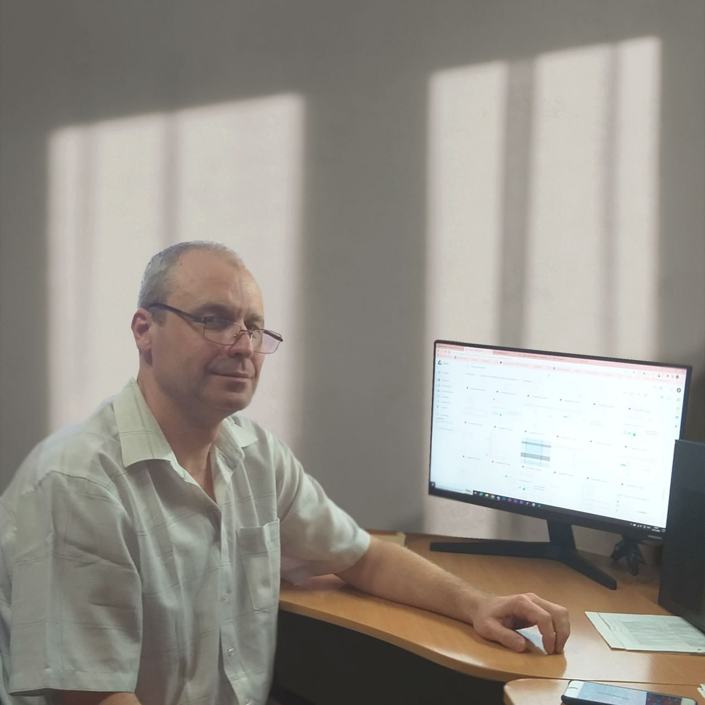

Привет, я Владимир Кобцев — начинающий SEO-специалист
Мой путь в SEO начался с интереса к тому, как устроены сайты изнутри. До этого я занимался версткой (HTML, CSS, JavaScript) и создавал сайты с нуля. Мне стало интересно, как привлечь на них людей, как они попадают в топ поиска, и я решил глубоко изучить SEO.
Сейчас я прошел комплексное обучение по программе «Профессия SEO-специалист с 0 до Middle 2.0» в Rush-Academy и готов применять полученные знания на практике.
Мой подход к работе
Не просто набор ключей
Создание удобного и понятного сайта для людей, который при этом нравится поисковым системам.
Техническая честность
Благодаря опыту в верстке, я понимаю код. Я не гадаю, а вижу проблему своими глазами.
Системность
SEO — марафон. Я довожу дела до конца, анализирую и ищу неочевидные точки роста.
💻 Профессиональные навыки
- ✓ Технический аудит сайтов
- ✓ Сбор и кластеризация семантики
- ✓ Работа с Яндекс.Вебмастер и Метрикой
- ✓ Понимание HTML/CSS/JS
- ✓ Составление ТЗ для копирайтеров
- ✓ Анализ конкурентов
🧠 Личные качества
- ✓ Ответственность
- ✓ Внимательность к деталям
- ✓ Усидчивость
- ✓ Высокая обучаемость
- ✓ Самостоятельность
- ✓ Пунктуальность
Мое обучение
В январе 2026 года я успешно завершил обучение по программе «Профессия SEO-специалист с 0 до Middle 2.0» в Rush-Academy (90 академических часов).
За время учебы я выполнил 18 практических проектов, которые охватывают все ключевые аспекты SEO: от технического аудита до разработки стратегий продвижения. Все эти работы можно посмотреть в разделе «Кейсы».
📜 Посмотреть сертификатНемного личного
🏠 Живу в городе Жигулевск, Самарская область. В поиске удаленной работы, так как хочу полностью посвятить себя развитию в IT.
⚡ До SEO я много лет работал с техникой и электрикой — от обслуживания оборудования в аэропорту до электромонтажа в жилых домах и офисах. Эта работа научила меня главному: любую задачу нужно решать до конца, внимательно и безопасно. В SEO я применяю тот же подход — не ищу легких путей, а делаю работу качественно.
👨👩👧 Свободное время полностью посвящаю себя семье. Ценю порядок, структуру и честность в отношениях и в работе.
Давайте знакомиться!
Если вы ищете ответственного, технически подкованного помощника в SEO, который готов учиться и работать на результат, — давайте знакомиться!